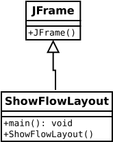
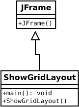
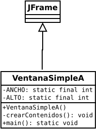

La GUI de java
Uso de GUI (Graphical User Interface). El diseño de la API (Application Programming Interface) para la programación de la GUI de Java es un excelente ejemplo de cómo se aplica el principio orientado a objetos. Este capítulo tiene dos propósitos. Primero, presenta los conceptos básicos de la programación de GUI de Java. En segundo lugar, utiliza GUI para demostrar la programación orientada a objetos. Específicamente, este capítulo presentará el marco de la API de la GUI de Java y discutirá los componentes de la GUI y sus relaciones. asociaciones, contenedores y administradores de diseño, colores, fuentes, bordes, iconos de imágenes y sugerencias de herramientas.
La API GUI de java. Contiene tres tipos de clases: clases de componentes, clases de contenedores y clases auxiliares.
Las clases de componentes de GUI, tales como: JButton, JLabel y JTextField.
Las clases de contenedores de GUI, tales como: JFrame, JPanel y JApplet.
Las clases auxiliares de GUI, tales como: Graphics, Color, Font, FontMetrics y Dimension.
JButton jbtOK = new JButton("OK");
System.out.println(jbtOK instanceof JButton);
System.out.println(jbtOK instanceof JComponent);
System.out.println(jbtOK instanceof Container);
System.out.println(jbtOK instanceof Component);
System.out.println(jbtOK instanceof Object);
Crear un frame.
import javax.swing.JFrame;
public class MiFrame {
public static void main(String[] args) {
JFrame frame = new JFrame("MiFrame"); // Se crea un frame
frame.setSize(400, 300); // Se pone el tamanio del frame
frame.setLocationRelativeTo(null); // Se centra al frame
frame.setDefaultCloseOperation(JFrame.EXIT_ON_CLOSE);
frame.setVisible(true); // Despliega al frame
}
}
Agregar componentes a un frame.
import javax.swing.*;
public class MiFrameConComponentes {
public static void main(String[] args) {
JFrame frame = new JFrame("MiFrameConComponentes");
// Se agrega un botón al frame
JButton jbtOK = new JButton("Bienvenido");
frame.add(jbtOK);
frame.setSize(400, 300);
frame.setDefaultCloseOperation(JFrame.EXIT_ON_CLOSE);
frame.setLocationRelativeTo(null); // Se centra el frame
frame.setVisible(true);
}
}
Programa MiFrameConComponentes.java
Crear un diseño de flujo de frame.
import javax.swing.JLabel;
import javax.swing.JTextField;
import javax.swing.JFrame;
import java.awt.FlowLayout;
public class ShowFlowLayout extends JFrame {
public ShowFlowLayout() {
// Se ponen FlowLayout, alineado a la izquierda con un intervalo de 10
// y un intervalo vertical de 20 entre componentes
setLayout( new FlowLayout(FlowLayout.LEFT, 10, 20) );
// Se agregan etiquetas y campos de texto en el frame
add(new JLabel("Nombre"));
add(new JTextField(8));
add(new JLabel("MI"));
add(new JTextField(1));
add(new JLabel("Apellido"));
add(new JTextField(8));
}
public static void main(String[] args) {
ShowFlowLayout frame = new ShowFlowLayout();
frame.setTitle("ShowFlowLayout");
frame.setSize(200, 200);
frame.setLocationRelativeTo(null);
frame.setDefaultCloseOperation(JFrame.EXIT_ON_CLOSE);
frame.setVisible(true);
}
}

Crear un diseño de una rejilla de frame.
import javax.swing.JLabel;
import javax.swing.JTextField;
import javax.swing.JFrame;
import java.awt.GridLayout;
public class ShowGridLayout extends JFrame {
public ShowGridLayout() {
// Se ponen GridLayout, 3 renglones, 2 columnas, y un intervalo de 5 entre
// componentes horizontalmente y verticalmente
setLayout( new GridLayout(3, 2, 5, 5));
// Se agregan etiquetas y campos de texto a el frame
add(new JLabel("Nombre"));
add(new JTextField(8));
add(new JLabel("MI"));
add(new JTextField(1));
add(new JLabel("Apellido"));
add(new JTextField(8));
}
/** El método main */
public static void main(String[] args) {
ShowGridLayout frame = new ShowGridLayout();
frame.setTitle("ShowGridLayout");
frame.setSize(200, 125);
frame.setLocationRelativeTo(null); // Se centra el frame
frame.setDefaultCloseOperation(JFrame.EXIT_ON_CLOSE);
frame.setVisible(true);
}
}


Introduction to programing in Java, John Dean and Raymond Dean, Pág. 520
Más sobre componentes
Código en java. El siguiente código es un contorno de un frame:
import javax.swing.JButton;
import javax.swing.JFrame;
import java.awt.BorderLayout;
public class ShowBorderLayout extends JFrame {
public ShowBorderLayout() {
// Se pone BorderLayout con intervalo horizontal de 5 e intervalo vertical de 10
setLayout( new BorderLayout(5, 10) );
// Se agregan botones al frame
add(new JButton("Este"), BorderLayout.EAST);
add(new JButton("Sur"), BorderLayout.SOUTH);
add(new JButton("Oeste"), BorderLayout.WEST);
add(new JButton("Norte"), BorderLayout.NORTH);
add(new JButton("Centro"), BorderLayout.CENTER);
}
/** El método main */
public static void main(String[] args) {
ShowBorderLayout frame = new ShowBorderLayout();
frame.setTitle("ShowBorderLayout");
frame.setSize(300, 200);
frame.setLocationRelativeTo(null); // se centra el frame
frame.setDefaultCloseOperation(JFrame.EXIT_ON_CLOSE);
frame.setVisible(true);
}
}
Programa ShowBorderLayout.java
Aplicaciones
Aplicación 1. Un horno de microondas:
import java.awt.*;
import javax.swing.*;
public class PruebaDePaneles extends JFrame {
public PruebaDePaneles() {
// Se crea el panel p1 para los botones y se pone GridLayout
JPanel p1 = new JPanel();
p1.setLayout(new GridLayout(4, 3));
// Se agregan los botones al panel
for (int i = 1; i <= 9; i++) {
p1.add (new JButton("" + i));
}
p1.add(new JButton("" + 0));
p1.add(new JButton("Iniciar"));
p1.add(new JButton("Parar"));
// Se crea el panel p2 para tener un campo de texto y p1
JPanel p2 = new JPanel(new BorderLayout());
p2.add (new JTextField("Poner el tiempo aquí"),
BorderLayout.NORTH);
p2.add (p1, BorderLayout.CENTER);
// Se agregan contenidos en el frame
add(p2, BorderLayout.EAST);
add(new JButton("Colocar la comida aquí"),
BorderLayout.CENTER);
}
/** Método principal */
public static void main(String[] args) {
PruebaDePaneles frame = new PruebaDePaneles();
frame.setTitle("La vista frontal del horno de microondas");
frame.setSize(400, 250);
frame.setLocationRelativeTo(null); // Se centra al frame
frame.setDefaultCloseOperation(JFrame.EXIT_ON_CLOSE);
frame.setVisible(true);
}
}
Aplicación 2. Tres botones y dos etiquetas:
import java.awt.*;
import javax.swing.*;
import javax.swing.border.*;
public class PruebaSwingCaracteristicasComunes extends JFrame {
public PruebaSwingCaracteristicasComunes() {
// Se crea un panel para un grupo de tres botones
JPanel p1 = new JPanel(new FlowLayout(FlowLayout.LEFT, 2, 2));
JButton jbtLeft = new JButton("Izquierdo");
JButton jbtCenter = new JButton("Centro");
JButton jbtRight = new JButton("Derecho");
jbtLeft.setBackground(Color.WHITE);
jbtCenter.setForeground(Color.GREEN);
jbtRight.setToolTipText("Este es el boton derecho");
p1.add(jbtLeft);
p1.add(jbtCenter);
p1.add(jbtRight);
p1.setBorder(new TitledBorder("Tres Botones"));
// Se crea un font y un borde de linea
Font largeFont = new Font("TimesRoman", Font.BOLD, 20);
Border lineBorder = new LineBorder(Color.BLACK, 2);
// Se crea un panel para un grupo de dos etiquetas
JPanel p2 = new JPanel(new GridLayout(1, 2, 5, 5));
JLabel jlblRed = new JLabel("Rojo");
JLabel jlblOrange = new JLabel("Naranja");
jlblRed.setForeground(Color.RED);
jlblOrange.setForeground(Color.ORANGE);
jlblRed.setFont(largeFont);
jlblOrange.setFont(largeFont);
jlblRed.setBorder(lineBorder);
jlblOrange.setBorder(lineBorder);
p2.add(jlblRed);
p2.add(jlblOrange);
p2.setBorder(new TitledBorder("Dos etiquetas"));
// Se agregan dos paneles en el frame
setLayout(new GridLayout(2, 1, 5, 5));
add(p1);
add(p2);
}
public static void main(String[] args) {
// Se crea un frame y se declaran sus propiedades
JFrame frame = new PruebaSwingCaracteristicasComunes();
frame.setTitle("PruebaSwingCaracteristicasComunes");
frame.setSize(300, 150);
frame.setLocationRelativeTo(null); // Se centra el frame
frame.setDefaultCloseOperation(JFrame.EXIT_ON_CLOSE);
frame.setVisible(true);
}
}
Programa PruebaSwingCaracteristicasComunes.java
Aplicación 3. Uso de íconos desplegados en ventanas:
import javax.swing.*;
import java.awt.*;
public class PruebaImagenIconoDriver extends JFrame {
private ImageIcon usIcon = new ImageIcon("/curie.svg");
private ImageIcon myIcon = new ImageIcon("image/my.jpg");
private ImageIcon frIcon = new ImageIcon("image/fr.gif");
private ImageIcon ukIcon = new ImageIcon("image/uk.gif");
public PruebaImagenIconoDriver() {
setLayout(new GridLayout(1, 4, 5, 5));
add(new JLabel(usIcon));
add(new JLabel(myIcon));
add(new JButton(frIcon));
add(new JButton(ukIcon));
}
/** El método principal */
public static void main(String[] args) {
PruebaImagenIconoDriver frame = new PruebaImagenIconoDriver();
frame.setTitle("PruebaImagenIconoDriver");
frame.setSize(200, 200);
frame.setLocationRelativeTo(null); // Se centra el frame
frame.setDefaultCloseOperation(JFrame.EXIT_ON_CLOSE);
frame.setVisible(true);
}
}
Programa PruebaImagenIconoDriver.java
Aplicación 4. Uso de íconos desplegados en ventanas:
import javax.swing.*;
import java.awt.Graphics;
public class PruebaPintarComponentesDrver extends JFrame {
public PruebaPintarComponentesDrver() {
add( new NewPanel() );
}
class NewPanel extends JPanel {
protected void paintComponent(Graphics g) {
super.paintComponent(g);
g.drawLine(50, 10, 50, 50);
g.drawLine(50, 50, 120, 50);
g.drawLine(50, 10, 120, 10);
g.drawString("Anuncio", 60, 35);
}
}
public static void main(String[] args) {
PruebaPintarComponentesDrver frame = new PruebaPintarComponentesDrver();
frame.setTitle("PruebaPintarComponentesDrver");
frame.setSize(200, 100);
frame.setLocationRelativeTo(null); // Se centra el frame
frame.setDefaultCloseOperation(JFrame.EXIT_ON_CLOSE);
frame.setVisible(true);
}
}
Aplicación 5. Dibujar arcos:
import javax.swing.JFrame;
import javax.swing.JPanel;
import java.awt.Graphics;
public class DibujarArcosDriver extends JFrame {
public DibujarArcosDriver() {
setTitle("DibujarArcosDriver");
add(new ArcsPanel());
}
/** El método principal */
public static void main(String[] args) {
DibujarArcosDriver frame = new DibujarArcosDriver();
frame.setSize(250, 300);
frame.setLocationRelativeTo(null); // Se centra el frame
frame.setDefaultCloseOperation(JFrame.EXIT_ON_CLOSE);
frame.setVisible(true);
}
}
// La clase para dibujar arcos en el panel
class ArcsPanel extends JPanel {
// Se dibujan cuatro aspas de ventilador
protected void paintComponent(Graphics g) {
super.paintComponent(g);
int xCenter = getWidth() / 2;
int yCenter = getHeight() / 2;
int radius = (int)(Math.min(getWidth(), getHeight()) * 0.4);
int x = xCenter - radius;
int y = yCenter - radius;
g.fillArc(x,y, 2 * radius, 2 * radius,0, 30);
g.fillArc(x,y, 2 * radius, 2 * radius,90, 30);
g.fillArc(x,y, 2 * radius, 2 * radius,180, 30);
g.fillArc(x,y, 2 * radius, 2 * radius,270, 30);
}
}
Aplicación 6. Dibujar poligonos:
import javax.swing.JPanel;
import java.awt.Graphics;
import java.awt.Polygon;
import javax.swing.JFrame;
public class DibujarPoligonosDriver extends JFrame {
public DibujarPoligonosDriver() {
setTitle("DibujarPoligonosDriver");
add(new PolygonsPanel());
}
/** El método principal */
public static void main(String[] args) {
DibujarPoligonosDriver frame = new DibujarPoligonosDriver();
frame.setSize(200, 250);
frame.setLocationRelativeTo(null); // Se centra el frame
frame.setDefaultCloseOperation(JFrame.EXIT_ON_CLOSE);
frame.setVisible(true);
}
}
// Dibujar un poligono en el panel
class PolygonsPanel extends JPanel {
protected void paintComponent(Graphics g) {
super.paintComponent(g);
int xCenter = getWidth() / 2;
int yCenter = getHeight() / 2;
int radius = (int)(Math.min(getWidth(), getHeight()) * 0.4);
// Se crea el objeto Polygon
Polygon polygon = new Polygon();
// Se agregan puntos al poligono en este orden
polygon.addPoint (xCenter + radius, yCenter);
polygon.addPoint ((int)(xCenter + radius *
Math.cos(2 * Math.PI / 6)), (int)(yCenter - radius *
Math.sin(2 * Math.PI / 6)));
polygon.addPoint((int)(xCenter + radius *
Math.cos(2 * 2 * Math.PI / 6)), (int)(yCenter - radius *
Math.sin(2 * 2 * Math.PI / 6)));
polygon.addPoint((int)(xCenter + radius *
Math.cos(3 * 2 * Math.PI / 6)), (int)(yCenter - radius *
Math.sin(3 * 2 * Math.PI / 6)));
polygon.addPoint((int)(xCenter + radius *
Math.cos(4 * 2 * Math.PI / 6)), (int)(yCenter - radius *
Math.sin(4 * 2 * Math.PI / 6)));
polygon.addPoint((int)(xCenter + radius *
Math.cos(5 * 2 * Math.PI / 6)), (int)(yCenter - radius *
Math.sin(5 * 2 * Math.PI / 6)));
// Se dibuja el poligono
g.drawPolygon(polygon);
}
}
Aplicación 7. Dibujar mensaje:
import javax.swing.*;
import java.awt.*;
public class PruebaMensajeCentralDriver extends JFrame{
public PruebaMensajeCentralDriver() {
CenterMessage messagePanel = new CenterMessage();
add(messagePanel);
messagePanel.setBackground(Color.WHITE);
messagePanel.setFont(new Font("Californian FB", Font.BOLD, 30));
}
/** El método principal */
public static void main(String[] args) {
PruebaMensajeCentralDriver frame = new PruebaMensajeCentralDriver();
frame.setTitle("Mensaje de texto");
frame.setSize(300, 150);
frame.setLocationRelativeTo(null); // Se centra el frame
frame.setDefaultCloseOperation(JFrame.EXIT_ON_CLOSE);
frame.setVisible(true);
}
}
class CenterMessage extends JPanel {
/** Desplegar el mensaje */
protected void paintComponent(Graphics g) {
super.paintComponent(g);
// Dar la medida del font
FontMetrics fm = g.getFontMetrics();
// Encontrar el centro para desplegar
int stringWidth = fm.stringWidth("Bienvenido a los programas") ;
int stringAscent = fm.getAscent() ;
// Dar la posición del caracter de más a la izquierda in the baseline
int xCoordinate = getWidth() / 2 - stringWidth / 2;
int yCoordinate = getHeight() / 2 + stringAscent / 2;
g.drawString("Bienvenido a los programas", xCoordinate, yCoordinate);
}
}
Aplicación 8. Dibujar imagen:
import java.awt.*;
import javax.swing.*;
public class PresentarImagenDriver extends JFrame {
public PresentarImagenDriver() {
add(new ImagePanel());
}
public static void main(String[] args) {
JFrame frame = new PresentarImagenDriver();
frame.setTitle("Gráfo uno");
frame.setSize(300, 300);
frame.setLocationRelativeTo(null); // Se centra el frame
frame.setDefaultCloseOperation(JFrame.EXIT_ON_CLOSE);
frame.setVisible(true);
}
}
class ImagePanel extends JPanel {
private ImageIcon imageIcon = new ImageIcon("/media/jose/MEMUNO2019/E2AFD2.jpeg");
private Image image = imageIcon.getImage();
/** Se dibuja la imagen en el panel */
protected void paintComponent(Graphics g) {
super.paintComponent(g);
if (image != null)
g.drawImage(image, 0, 0, getWidth(), getHeight(), this);
}
}
Aplicación 9. Dibujar un círculo con botones:
import javax.swing.*;
import java.awt.*;
import java.awt.event.*;
public class ControlCirculoDriver2 extends JFrame {
private JButton jbtEnlarge = new JButton("Enlarge");
private JButton jbtShrink = new JButton("Shrink");
private CirclePanel canvas = new CirclePanel();
public ControlCirculoDriver2() {
JPanel panel = new JPanel(); // Uso de panel para un grupo de botones
panel.add(jbtEnlarge);
panel.add(jbtShrink);
this.add(canvas, BorderLayout.CENTER); // Agregar canvas al centro
this.add(panel, BorderLayout.SOUTH); // Agregar botones al frame
jbtEnlarge.addActionListener(new EnlargeListener());
}
/** El método principal */
public static void main(String[] args) {
JFrame frame = new ControlCirculoDriver2();
frame.setTitle("ControlCircle2");
frame.setLocationRelativeTo(null); // Se centra el frame
frame.setDefaultCloseOperation(JFrame.EXIT_ON_CLOSE);
frame.setSize(200, 200);
frame.setVisible(true);
}
class EnlargeListener implements ActionListener {
public void actionPerformed(ActionEvent e) {
canvas.enlarge();
}
}
class CirclePanel extends JPanel { // Dentro de la clase
private int radius = 5; // Radio del circulo por default
/** Agrandar el circulo */
public void enlarge() {
radius++;
repaint();
}
/** Rehacer el circulo */
protected void paintComponent(Graphics g) {
super.paintComponent(g);
g.drawOval(getWidth() / 2 - radius, getHeight() / 2 - radius,
2 * radius, 2 * radius);
}
}
}
Aplicación 10. Dibujar botones con iconos:
import javax.swing.*;
public class PruebaBotonoesConIconosDriver extends JFrame {
public PruebaBotonoesConIconosDriver() {
ImageIcon usIcon = new ImageIcon("image/usIcon.gif");
ImageIcon caIcon = new ImageIcon("image/caIcon.gif");
ImageIcon ukIcon = new ImageIcon("image/ukIcon.gif");
JButton jbt = new JButton("Dar click", usIcon);
jbt.setPressedIcon(caIcon);
jbt.setRolloverIcon(ukIcon);
add(jbt);
}
public static void main(String[] args) {
// Se crea un frame y se ponen sus propiedades
JFrame frame = new PruebaBotonoesConIconosDriver();
frame.setTitle("Botones con iconos");
frame.setSize(200, 100);
frame.setLocationRelativeTo(null); // Se centra el frame
frame.setDefaultCloseOperation(JFrame.EXIT_ON_CLOSE);
frame.setVisible(true);
}
}
Aplicación 11. Dibujar botones que mueven el texto a la izquierda o a la derecha:
import java.awt.*;
import java.awt.event.ActionListener;
import java.awt.event.ActionEvent;
import javax.swing.*;
public class BotonDriver extends JFrame {
// Create a panel for displaying message
protected MessagePanel messagePanel
= new MessagePanel("Bienvenido a Java");
// Declare two buttons to move the message left and right
private JButton jbtLeft = new JButton("<=");
private JButton jbtRight = new JButton("=>");
public static void main(String[] args) {
BotonDriver frame = new BotonDriver();
frame.setTitle("BotonDriver");
frame.setSize(250, 100);
frame.setLocationRelativeTo(null); // Center the frame
frame.setDefaultCloseOperation(JFrame.EXIT_ON_CLOSE);
frame.setVisible(true);
}
public BotonDriver() {
// Set the background color of messagePanel
messagePanel.setBackground(Color.white);
// Create Panel jpButtons to hold two Buttons "<=” and “right =>"
JPanel jpButtons = new JPanel();
jpButtons.add(jbtLeft);
jpButtons.add(jbtRight);
// Set keyboard mnemonics
jbtLeft.setMnemonic('L');
jbtRight.setMnemonic('R');
// Set icons and remove text
// jbtLeft.setIcon(new ImageIcon("image/left.gif"));
// jbtRight.setIcon(new ImageIcon("image/right.gif"));
// jbtLeft.setText(null);
// jbtRight.setText(null);
// Set tool tip text on the buttons
jbtLeft.setToolTipText("Move message to left");
jbtRight.setToolTipText("Move message to right");
// Place panels in the frame
setLayout(new BorderLayout());
add(messagePanel, BorderLayout.CENTER);
add(jpButtons, BorderLayout.SOUTH);
// Register listeners with the buttons
jbtLeft.addActionListener(new ActionListener() {
public void actionPerformed(ActionEvent e) {
messagePanel.moveLeft();
}
});
jbtRight.addActionListener(new ActionListener() {
public void actionPerformed(ActionEvent e) {
messagePanel.moveRight();
}
});
}
}
Aplicación 12. Dibujar una imágen con un texto:
import java.awt.*;
import javax.swing.*;
public class TextoAreaDriver extends JFrame {
// Se declara y se crea crea la descripción del panel
private DescriptionPanel descriptionPanel = new DescriptionPanel();
public static void main(String[] args) {
TextoAreaDriver frame = new TextoAreaDriver();
frame.pack();
frame.setLocationRelativeTo(null); // Se centra el frame
frame.setDefaultCloseOperation(JFrame.EXIT_ON_CLOSE);
frame.setTitle("TextAreaDemo");
frame.setVisible(true);
}
public TextoAreaDriver() {
// Se pone el título, el texto y la imágen en la descripción panel
descriptionPanel.setTitle("Autómata");
String description = "The Maple Leaf flag \n\n" +
"The Canadian National Flag was adopted by the Canadian " +
"Parliament on October 22, 1964 and was proclaimed into law " +
"by Her Majesty Queen Elizabeth II (the Queen of Canada) on " +
"February 15, 1965. The Canadian Flag (colloquially known " +
"as The Maple Leaf Flag) is a red flag of the proportions " +
"two by length and one by width, containing in its center a " +
"white square, with a single red stylized eleven-point " +
"maple leaf centered in the white square.";
descriptionPanel.setDescription(description);
descriptionPanel.setImageIcon(new ImageIcon("/media/jose/MEMUNO2019/E2AFD2.jpeg"));
// Se agrega la descripción del panel en el frame
setLayout(new BorderLayout());
add(descriptionPanel, BorderLayout.CENTER);
}
}
Aplicación 13. Dibujar una ventana con slider:
import java.awt.*;
import javax.swing.*;
import javax.swing.event.*;
public class SliderDriver extends JFrame {
// Se crea el sliders horizontal y vertical
private JSlider jsldHort = new JSlider(JSlider.HORIZONTAL);
private JSlider jsldVert = new JSlider(JSlider.VERTICAL);
// Se crea el MessagePanel
private MessagePanel messagePanel =
new MessagePanel("Bienvenido a Java");
public static void main(String[] args) {
SliderDriver frame = new SliderDriver();
frame.setTitle("SliderDriver");
frame.setLocationRelativeTo(null); // Se centra el frame
frame.setDefaultCloseOperation(JFrame.EXIT_ON_CLOSE);
frame.pack();
frame.setVisible(true);
}
public SliderDriver() {
// Se agrega el sliders y el message panel a el frame
setLayout(new BorderLayout(5, 5));
add(messagePanel, BorderLayout.CENTER);
add(jsldVert, BorderLayout.EAST);
add(jsldHort, BorderLayout.SOUTH);
// Se ponene las propiedades del sliders
jsldHort.setMaximum(50);
jsldHort.setPaintLabels(true);
jsldHort.setPaintTicks(true);
jsldHort.setMajorTickSpacing(10);
jsldHort.setMinorTickSpacing(1);
jsldHort.setPaintTrack(false);
jsldVert.setInverted(true);
jsldVert.setMaximum(10);
jsldVert.setPaintLabels(true);
jsldVert.setPaintTicks(true);
jsldVert.setMajorTickSpacing(10);
jsldVert.setMinorTickSpacing(1);
// Se registra el el listener del sliders
jsldHort.addChangeListener(new ChangeListener() {
/** Handle scroll-bar adjustment actions */
public void stateChanged(ChangeEvent e) {
// getValue() y getMaximumValue() regresan int, para un for
// precision, usa double
double value = jsldHort.getValue();
double maximumValue = jsldHort.getMaximum();
double newX = (value * messagePanel.getWidth() /
maximumValue);
messagePanel.setXCoordinate((int)newX);
}
});
jsldVert.addChangeListener(new ChangeListener() {
/** Acciones de ajuste del scroll-bar */
public void stateChanged(ChangeEvent e) {
// getValue() y getMaximumValue() regresan int, para un for
// precision, usa double
double value = jsldVert.getValue();
double maximumValue = jsldVert.getMaximum();
double newY = (value * messagePanel.getHeight() /
maximumValue);
messagePanel.setYCoordinate((int) newY);
}
});
}
}
Aplicación 14. Se presenta un frame con un boton y un espacio donde se escribe el nombre y da la bienvenida:
import javax.swing.*; // Para JFrame, JLabel, JTextField
import java.awt.*; // Para FlowLayout
import java.awt.event.*; // Para ActionListener, ActionEvent
public class Bienvenida extends JFrame {
private static final int WIDTH = 325;
private static final int HEIGHT = 100;
private JTextField nameBox; // holds user's name
private JLabel greeting;
// Personalizar la bienvenida
public Bienvenida() {
setTitle("Bienvenida");
setSize(WIDTH, HEIGHT);
setLayout(new FlowLayout());
setDefaultCloseOperation(EXIT_ON_CLOSE);
createContents();
setVisible(true);
} // Fin del constructor
// Se crean los componentes y se agregan a la ventana.
private void createContents() {
JLabel namePrompt = new JLabel("Cómo te llamas?");
nameBox = new JTextField(15);
greeting = new JLabel();
add(namePrompt);
add(nameBox);
add(greeting);
nameBox.addActionListener(new Listener());
} // Fin de createContents
// Clase interna para manejar evento.
private class Listener implements ActionListener {
public void actionPerformed(ActionEvent e) {
String message; // La bienvenida personalizada
message = "Mucho gusto, " + nameBox.getText()+ "!";
nameBox.setText("");
greeting.setText(message);
} // Fin de actionPerformed
} // Fin de la clase Listener
public static void main(String[] args) {
new Bienvenida();
} // Fin del main
} // Fin de la clase Bienvenida
Aplicación 15. Uso de un BorderLayout para escribir los paises de Africa:
import javax.swing.*;
import java.awt.*;
public class CiudadesAfricanasDriver extends JFrame {
private static final int WIDTH = 325;
private static final int HEIGHT = 200;
public CiudadesAfricanasDriver() {
setTitle("Ciudades Africanas");
setSize(WIDTH, HEIGHT);
setDefaultCloseOperation(EXIT_ON_CLOSE);
setLayout(new BorderLayout());
add(new JButton("Tunez"), BorderLayout.NORTH);
add(new JButton("Su Africa"), // Se usa el lenguaje html
BorderLayout.SOUTH);
add(new JButton("Sahara oriental"), BorderLayout.WEST);
add(new JButton("República Africana Central"),
BorderLayout.CENTER);
add(new JButton("Somalia"), BorderLayout.EAST);
setVisible(true);
} // Fin del constructor CiudadesAfricanasDriver
public static void main(String[] args) {
new CiudadesAfricanasDriver();
} // Fin del método main
} // Fin de la clase CiudadesAfricanasDriver
Aplicación 16. Cambiar el color de fondo por medio de botones:
import javax.swing.*; // Para JFrame y JButton
import java.awt.*; // Para FlowLayout, Color, y Container
import java.awt.event.*; // Para ActionListener y ActionEvent
public class EscogerColorDriver extends JFrame {
private static final int WIDTH = 300;
private static final int HEIGHT = 100;
private JButton grayButton; // Se cambia el background a gris
private JButton blueButton; // Se cambia el background a azul
public EscogerColorDriver() {
setTitle("Se escoge el color de fondo");
setSize(WIDTH, HEIGHT);
setLayout(new FlowLayout());
setDefaultCloseOperation(EXIT_ON_CLOSE);
createContents();
setVisible(true);
} // Fin del constructor EscogerColorDriver
private void createContents() {
//Esto pone el gris
grayButton = new JButton("Gris");
grayButton.setBackground(Color.LIGHT_GRAY);
grayButton.addActionListener(new ButtonListener());
add(grayButton);
//Esto pone el azul
blueButton = new JButton("Azul");
blueButton.setBackground(new Color(135,206,250));
blueButton.addActionListener(new ButtonListener());
add(blueButton);
} // Fin del método createContents
// La clase interna para manejar el evento.
private class ButtonListener implements ActionListener {
public void actionPerformed(ActionEvent e) {
Container contentPane = getContentPane();
if (e.getSource() == grayButton) {
// Se cambia el background de la ventana a color gris.
contentPane.setBackground(Color.GRAY);
}
else {
// Se cambia el background de la ventana a color azul.
contentPane.setBackground(Color.BLUE);
}
} // Fin del método actionPerformed
} // Fin de la clase interna ButtonListener
public static void main(String[] args) {
new EscogerColorDriver();
}
} // Fin de la clase EscogerColorDriver
Aplicación 17. Calculadora de factoriales:
import javax.swing.*;
import java.awt.*;
import java.awt.event.*;
public class FactorialBoton extends JFrame {
private static final int WIDTH = 300;
private static final int HEIGHT = 100;
private JTextField xBox; // Escribe el número de entrada
private JTextField xfBox; // Presenta el factorial
public FactorialBoton() {
setTitle("Calculadora de Factoriales");
setSize(WIDTH, HEIGHT);
setLayout(new FlowLayout());
setDefaultCloseOperation(EXIT_ON_CLOSE);
createContents();
setVisible(true);
} // Fin del constructor FactorialButton
private void createContents() {
JLabel xLabel = new JLabel("x:");
JLabel xfLabel = new JLabel("x!:");
JButton btn = new JButton("Factorial");
Listener listener = new Listener();
xBox = new JTextField(2);
xfBox = new JTextField(10);
xfBox.setEditable(false);
add(xLabel);
add(xBox);
add(xfLabel);
add(xfBox);
add(btn);
xBox.addActionListener(listener);
btn.addActionListener(listener);
} // Fi del método createContents
// Clase interna para manejar el evento.
private class Listener implements ActionListener {
public void actionPerformed(ActionEvent e) {
int x;
// El valor numérico a escribir x
int xf;
// El factorial x
try
{
x = Integer.parseInt(xBox.getText());
}
catch (NumberFormatException nfe)
{
x = -1; // Indica un x invalido
}
if (x < 0)
{
xfBox.setText("indefinido");
}
else
{
if (x == 0 || x == 1)
{
xf = 1;
}
else
{
xf = 1;
for (int i=2; i<=x; i++)
{
xf *= i;
}
} // Fin del else
xfBox.setText(Integer.toString(xf));
} // Fin del else
} // Fin de actionPerformed
} // Fin de la clase Listener
public static void main(String[] args) {
new FactorialBoton();
} // Fin del método main
} // Fin de la clase FactorialBoton